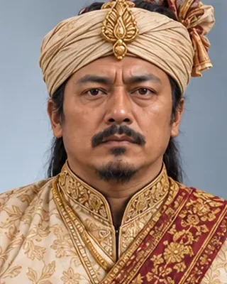

April 1782
গৌৰীনাথ সিংহ
1780–1795 · Thirty-fifth Ahom king

Became king at about fifteen. Rebels took the capital in 1786; British troops under Captain Welsh restored order in lower Assam in 1792–94 and then left. Died at Jorhat in December 1794.
The infobox gives 1794 as the end; the king list gives 1795.
Record confidence: high.
April 1782

1786–1788

1788

c. 1791

1792–1794

February 1793

1794